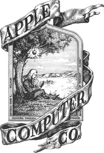
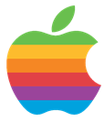

HISTÓRIA DA ORIGEM DA LOGO APPLE
A ideia da maçã como símbolo da Apple Inc . surgiu de maneira simples, mas com significado profundo. O conceito é atribuído ao cofundador Steve Jobs. A escolha e o design do logotipo evoluíram com o tempo, refletindo a visão criativa e inovadora da empresa. Aqui estão os principais pontos sobre a origem do símbolo
Por que a maçã?
Steve Jobs, conhecido por seu interesse em alimentação saudável e sua dieta frugal, passou um tempo em
uma fazenda de maçãs em Oregon, o que influenciou a escolha do nome Apple
. Ele acreditava que o nome
era simples, divertido e não intimidador, diferente dos nomes técnicos da época.
Além disso, a maçã é associada ao conhecimento e à inovação, inspirada pela história de Isaac Newton
e a descoberta da gravidade.
A primeira logotipo
O primeiro logotipo da Apple, criado em 1976 por Ronald Wayne, mostrava Newton sentado sob uma macieira. No entanto, esse design foi considerado muito detalhado e complexo.
O icônico logotipo da maçã mordida O segundo logotipo, desenhado por Rob Janoff em 1977, apresenta uma maçã com uma mordida. A mordida foi incluída para evitar que a maçã fosse confundida com uma cereja ou outro fruto pequeno. O termo "byte" (em inglês, jogo de palavras com "bite", que significa mordida) também faz referência ao mundo digital.
A maçã inicialmente apresentava um design com listras coloridas, representando a capacidade do Apple II de exibir cores. Desde então, o logo passou por simplificações e modernizações, mantendo o formato original, mas com cores sólidas para um estilo mais elegante. A escolha da maçã e seu design refletem a filosofia da empresa: simplicidade, inovação e acessibilidade tecnológica.